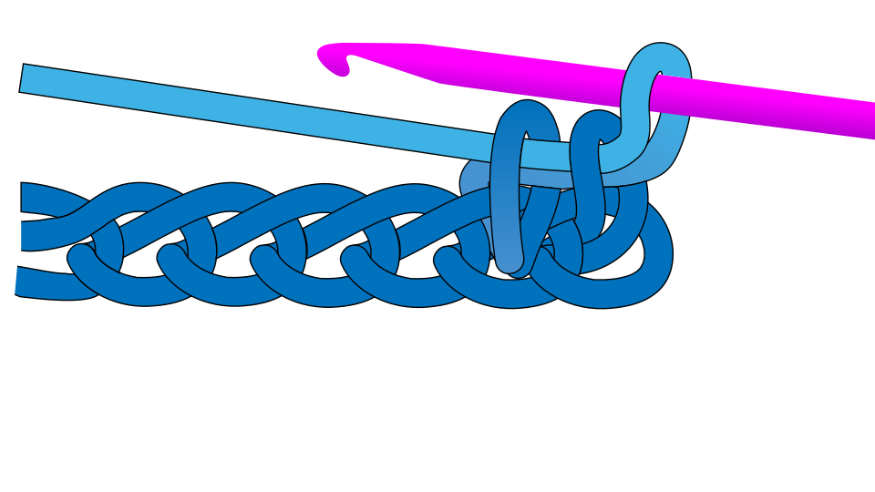
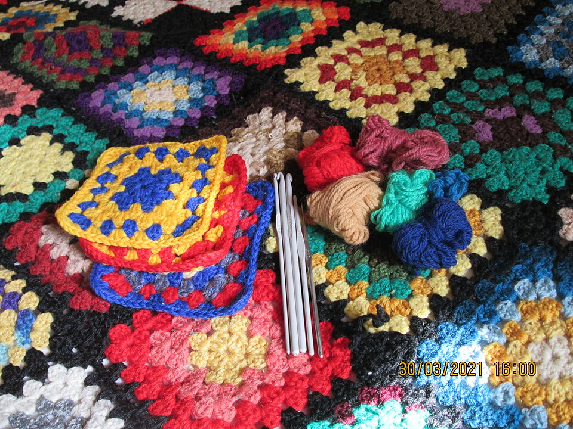
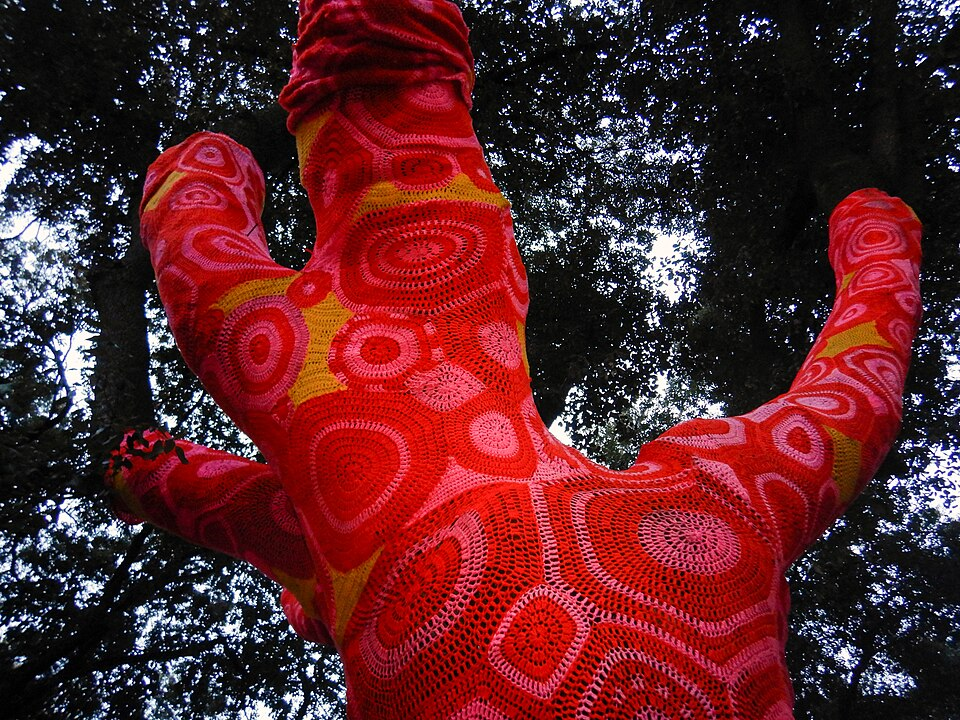

As a beginner, you are just getting started on your journey of crochet!
Watching simple online tutorials, especially video or image based ones, will help you improve.
You can also look to see if there are any crochet clubs in your community, or if anyone you know
could teach you. In-person instruction is a very big help!
It's recommended to start with easier projects, so if you've never crocheted before, try starting with granny
squares and 2D patterns like scarves. Familiarize yourself with crochet terminology. Once you go through a couple of projects,
making advanced crochet will be MUCH easier and faster.

Credit: Bastique on Wikimedia Commons
As an intermediate crocheter, you already have a couple of projects under your hook. (ha, ha. not funny ik)
You can improve by picking incrementally more challenging projects, like complex amigurumi. Or, perfect you yarn tension and
speed (and patience) by making larger projects.
Remember to have lots of fun with it!

Credit: Sudzie on Wikimedia Commons
Try some difficult crochet projects or challenges! Remember to give back to the community while you're at it. Take a new crocheter under your wing, maybe start a crochet club, and share the fun with others! You've come a long way!

Credit: Albarubescens on Wikimedia Commons